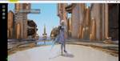
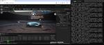
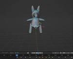
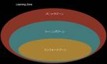
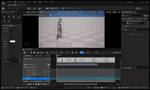
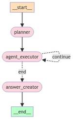

電通総研 テックブログ
https://tech.dentsusoken.com/
電通総研が運営する技術ブログ
フィード
Amazon EKSのWindowsノードを用いてUEアプリケーションを配信する 後編
電通総研 テックブログ
こんにちは、金融ソリューション事業部の孫です。 記事の前編では、Kubernetes上に必要なDockerイメージを作成しました。 今回は、EKSの構築に取り組み、KubernetesホスティングのUEアプリケーションを配信します。 はじめに 実施手順 開発環境 インフラ構造図 1. EKS環境の構築 ClusterとNodeGroupの作成 ECRアクセス権の追加 2. Kubernetes Device Plugins for DirectXのインストールとテスト 3. AWS ALB Ingress Controllerのインストール ALB Ingress Controller用のIA…
14時間前

Amazon EKSのWindowsノードを用いてUEアプリケーションを配信する 前編
電通総研 テックブログ
こんにちは、金融ソリューション事業部の孫です。 前回の記事で、Amazon EKS（AWSが提供するKubernetesサービス、以下EKSと略）用のWindowsノードAMI（Amazon Machine Images、以下AMIと略）の構築方法について紹介しました。 今回は、このAMIを使用してWindowsノードを作成し、UnrealEngine（以下はUE）アプリケーションを配信する方法を説明します。 今回のUEアプリケーションサーバーはWindowsコンテナで実行され、PixelStreaming技術を使用してWebブラウザからアクセスできます。 従来のアプリケーションのインストール…
14時間前

UEアプリ用のカスタムWindows Node AMIを作成する 後編
電通総研 テックブログ
こんにちは、金融ソリューション事業部の孫です。 前編では、Unreal Editorを含むWindowsコンテナイメージの構築を完了しました。 本記事では、前編で構築したコンテナイメージを利用するAmazon EKS（以下EKS）のWindows Node AMIを作成します。 EKSのドキュメントをよると、AWSはユーザー向けに最適化されたEKS optimized WindowsAMIを提供していることがわかりました。 このEKS optimized WindowsAMIにはEKSでの動作可能なミドルウェアがインストールされていますが、前編で構築したコンテナイメージをサポートするには不足し…
2日前

UEアプリ用のカスタムWindows Node AMIを作成する 前編
電通総研 テックブログ
こんにちは、金融ソリューション事業部の孫です。 本記事ではUEアプリ用のカスタムWindows Node AMIを作成します。 これまでの記事ではLinuxベースのノードで運用しておりました。 しかし、開発プロジェクトによってはWindowsノードは必須となるケースがあるので、その場合に本記事の知見が読者の皆様にご参考になれば幸いです。 本記事の内容は、前編と後編に分けて紹介します。 前編では、Unreal Editorを動作させるためのコンテナイメージの構築に焦点を当てています。 後編では、そのUnreal EditorコンテナイメージをWindows AMIに統合し、EKSでノードとして使…
2日前

Blenderで自作の3Dモデルにアーマチュアを追加して、アニメーションさせる
電通総研 テックブログ
こんにちは、電通総研金融ソリューション事業部の岡崎です。 今回は3Dモデルにアニメーションをつけるために、 Blenderを使用して、アセット内にアーマチュア（ボーン）を作成して アニメーションを動かすまでの作成方法をご紹介します。 検証環境/ツール OS：Windows 11 pro GPU：NVIDIA GeForce RTX 4070 Ti Blender：3.6.4 実装手順 アーマチュアの作成 アーマチュアの各ボーンの名称を変更 アーマチュアとメッシュの結合 アニメーションの作成 1. アーマチュアの作成 まずはアニメーションをする元となるアセットを用意します。 今回は簡易的に作った…
2日前
AITCの挑戦：Kaggle Home Creditコンペで学んだ技術と成果
電通総研 テックブログ
はじめに こんにちは、Xイノベーション本部 AITCの鴨谷です。 私はAITCのコンサルティングチームに所属しており、日々データ分析や機械学習モデルの開発に取り組んでいます。 今回は、AITCのチームで参加したKaggleのHome Credit-Credit Risk Model Stabilityコンペ(https://www.kaggle.com/competitions/home-credit-credit-risk-model-stability) についてお話しします。2024年4月から6月にかけて行われたこのコンペで、私たちのチームは81位に入り、銀メダルを獲得しました。 この記…
2日前

コンフォートゾーンを抜け出す
電通総研 テックブログ
グループ経営ソリューション事業部で、会計プロダクト「Ci*X Financials」の製品開発を担当している高崎です。 唐突ですが、皆さんは自身のスキルアップのために、どのようなことに取り組んでいますか？ 例えば、書籍を購入して自己学習をしたり、社内外の勉強会や研修に参加したり、自身が学んだことを誰かに教えたりなど様々なことに取り組んでいるかと思います。 これらの方法でもスキルアップは可能ですが、コンフォートゾーンを抜け出すということを意識して行動することで、より効果的にスキルアップが可能です。 コンフォートゾーンを抜け出すという行動について、私の実体験を交えて、紹介したいと思います。 コンフ…
2日前
k近傍法による多クラス分類
電通総研 テックブログ
こんにちは。コミュニケーションIT事業部 ITソリューション部の英です。 普段はWebアプリやスマホアプリの案件などを担当しています。あと、趣味でAIを勉強しています。 突然ですが、AIの勉強をしているとk-means法とk近傍法って混同しませんか？ 不意に尋ねられた際にぱっと答えられる自信がありません。 前回はk-means法について解説したので、今回はk近傍法の検証をしましょう。 k-means法：クラスタリング手法で、データをk個のグループに分ける、教師なし学習 k近傍法：あるデータ点を、その点に最も近いk個の既知のデータ点(近傍)の多数決で分類する、教師あり学習 → 前回の記事 この記…
2日前
UE5 MetaHumanのControlRigを使ってアニメーションを作成する方法
電通総研 テックブログ
こんにちは、電通総研金融ソリューション事業部の岡崎です。 今回はUE5のMetaHumanとControlRigを使って簡単なアニメーションを作成する方法を紹介します。 アニメーションを本格的にゼロから作るためには、本来はUE以外のツールを使用して作成することが一般的ですが、 簡単な動きの場合はUEだけで作ることができます。 本記事ではMetaHumanがお辞儀をしたり、既存のアニメーションにアレンジを加えて、しゃがみながら歩行する方法などを紹介します。 検証環境/ツール OS：Windows 11 pro GPU：NVIDIA GeForce RTX 4070 Ti CPU：i9-12900…
6日前

UE5 レベルシーケンスやShot機能を使った動画制作手順
電通総研 テックブログ
こんにちは、電通総研金融ソリューション事業部の岡崎です。 今回はUE5のレベルシーケンスを使用してデモ動画を作る方法を紹介します。 この記事では基礎的な内容として、アクターの配置方法や移動、アニメーションの設定方法の紹介を行います。 また、複数人で共同でレベルシーケンスを制作する際にコンフリクトが起こりにくい制作の方法として、 Shot機能を使用した方法なども紹介していきます。 検証環境/ツール OS：Windows 11 pro GPU：NVIDIA GeForce RTX 4070 Ti Game Engine：Unreal Engine 5.2.1 実装手順 レベルシーケンスファイルの作…
9日前
k-means法によるクラスタリングと可視化
電通総研 テックブログ
こんにちは。コミュニケーションIT事業部 ITソリューション部の英です。 普段はWebアプリやスマホアプリの案件などを担当しています。あと、趣味でAIを勉強しています。 突然ですが、AIの勉強をしているとk-means法とk近傍法って混同しませんか？ 不意に尋ねられた際にぱっと答えられる自信がありません。 なので、今回から2回に渡ってk-means法とk近傍法のそれぞれを実際に検証して身に付けようと思います。 k-means法：クラスタリング手法で、データをk個のグループに分ける、教師なし学習 k近傍法：あるデータ点を、その点に最も近いk個の既知のデータ点(近傍)の多数決で分類する、教師あり学…
9日前

LLMエージェントの実行結果をPrompt flowとAzure AI Studioのトレース機能で管理する
電通総研 テックブログ
はじめに Azure AI Studio とは Azure AI Studioのトレース機能 Azure AI Studioのトレース機能の使い方 Azure AI Studioの準備 ローカル環境での準備 トレース機能の使い方 エージェントワークフローでトレース機能を使ってみる 実装コード トレース結果を確認 トレース機能の便利な点まとめ こんにちは！Xイノベーション本部AIトランスフォーメーションセンター（AITC）の後藤です。 本記事では最近盛り上がりつつあるLLMエージェントの開発に便利なAzure AI StudioとPrompt flowを使ったトレース機能について紹介します。 は…
9日前
UE5でMixamoのアニメーションをMetaHumanに適応させる方法
電通総研 テックブログ
こんにちは、電通総研金融ソリューション事業部の岡崎です。 今回はMixamoというAdobeが提供している、3Dキャラクター用のアニメーションを使用して、UE5内のキャラクターにいろいろなアニメーションを適応させる方法をご紹介します。 さらにMixamoで見つけたアニメーションを、MetaHumanにも適応させる方法も併せてご紹介します。 検証環境/ツール OS：Windows 11 pro GPU：NVIDIA GeForce RTX 4070 Ti Game Engine：Unreal Engine 5.2.1 実装手順 Mixamo Converterのダウンロード Mixamoでアニメ…
13日前

LiveLinkを使ってMetahumanの顔をモーションキャプチャで動かす 後編
電通総研 テックブログ
こんにちは、電通総研金融ソリューション事業部の岡崎です。 前回の記事ではMetaHumanIdentityを使用してLiveLink動画を調整する手順まで説明しました。 この記事は前回の続きからになりますので、まだご覧になっていない方は、前編も是非ご一読ください！ 検証環境/ツール OS：Windows 11 pro GPU：NVIDIA GeForce RTX 4070 Ti Game Engine：Unreal Engine 5.2.1 iPhone14pro：IOS16.4.1 実装手順 LiveLinkを使用した撮影 UnrealEngineの準備 iPhoneで撮影した動画をインポー…
16日前
LiveLinkを使ってMetaHumanの顔をモーションキャプチャで動かす 前編
電通総研 テックブログ
こんにちは、電通総研金融ソリューション事業部の岡崎です。 今回はLive Link Face for Unreal EngineというiPhoneのアプリを使用して iPhoneのカメラで撮影した顔のアニメーションをキャプチャし、UnrealEngineのMetaHumanに適応させる方法を ご紹介します。 また、こちらの山下さんの記事では、Livelinkを用いてリアルタイムにMetaHumanを動かす方法が紹介されていますので、ぜひそちらもご覧ください。 本記事は前編後編に分かれており、この記事では手順4の「MetaHumanIdentityを使用してLiveLink動画を調整」までをご紹…
16日前
SageMakerのランダムカットフォレストで異常検知
電通総研 テックブログ
こんにちは。コミュニケーションIT事業部 ITソリューション部の英です。 普段はWebアプリやスマホアプリの案件などを担当しています。あと、趣味でAIを勉強しています。 前回に引き続き IoTデバイス(温度センサー)の異常検知 をテーマに記事を書いてみます。 前回の記事はManaged Apache Flinkを使用した閾値でのリアルタイム異常検知でした。 → 前回の記事 今回の記事では閾値(正解)を与えずに異常を検出する仕組みをご紹介します。 使用するのはSageMakerに搭載されているRCF(ランダムカットフォレスト)というアルゴリズムです。 ランダムカットフォレストとは？ ランダムカッ…
16日前
SpatialComputing入門Part3：現実空間の平面に3Dオブジェクトを配置する
電通総研 テックブログ
[VisionPro] SpatialComputing入門Part3：現実空間の平面に3Dオブジェクトを配置する
19日前
SpatialComputing入門Part2：3DオブジェクトにGestureを追加する
電通総研 テックブログ
[VisionPro] SpatialComputing入門Part2：3DオブジェクトにGestureを追加する
19日前
SpatialComputing入門Part1：3Dオブジェクトを空間に配置する
電通総研 テックブログ
本記事は「SpatialComputing入門」シリーズのPart1となります。本記事では、Apple Vision Pro上で、ModelEntityクラスで生成した3Dオブジェクトを空間に表示する実装例をご紹介します。
19日前
UE5で群衆を作成する 後編 〜アセットのバリエーションを設定〜
電通総研 テックブログ
こんにちは、電通総研金融ソリューション事業部の岡崎です。 前回の記事では群衆の服の色をランダムにする手順まで説明しました。 この記事は前回の続きからになりますので、まだご覧になっていない方は、前編も是非ご一読ください！ 検証環境/ツール OS：Windows 11 pro GPU：NVIDIA GeForce RTX 4070 Ti Game Engine：Unreal Engine 5.2.1 実装手順 群衆で使用する人型のメッシュの用意 人型のメッシュにアニメーションを付与する 群衆のアセットをPCGで配置する 群衆の服の色をランダムにする 群衆の髪型をランダムにする 群衆のアニメーション…
20日前
AWS IAM USERにPasskeyが来たぞ！！！
電通総研 テックブログ
電通総研 X（クロス）イノベーション本部 の三浦です。 現在開催されているAWS re:Inforce 2024 のKeynote にて、AWS IAMのrootユーザーおよびIAMユーザーのMFA（多要素認証）としてPasskeyのサポートが発表されました。 以下、公式文書です。 AWS adds passkey multi-factor authentication (MFA) for root and IAM users AWS Identity and Access Management now supports passkey as a second authentication f…
20日前
UE5で群衆を作成する 前編 〜MetahumanをPCGで配置〜
電通総研 テックブログ
こんにちは、電通総研金融ソリューション事業部の岡崎です。 今回はUE5でPCGを使用した群衆を作成します。 作成する群衆は、ライブ会場などに配置するためのアセットとして使用する想定ですので、 後ろから見た姿の、服の色や髪、背丈や性別、動きのアニメーションなどをランダムになるように作成します。 また、今回は後ろ姿のみが映る予定ですので、顔の違いは考慮せずに作成していきます。 本記事は前編後編に分かれており、この記事では手順4の「群衆の服の色をランダムにする」までをご紹介します。 検証環境/ツール OS：Windows 11 pro GPU：NVIDIA GeForce RTX 4070 Ti G…
23日前
Amazon Kinesis Data StreamsでIoTデバイスのリアルタイム異常検知
電通総研 テックブログ
こんにちは。コミュニケーションIT事業部 ITソリューション部の英です。 普段はWebアプリやスマホアプリの案件などを担当しています。あと、趣味で AI を勉強しています。 今回は IoTデバイス(温度センサー)の異常検知 をテーマに記事を書いてみます。 温度センサーからAmazon Kinesis Data Streamsにデータが送信され、送信されたデータに対してAmazon Managed Service for Apache Flinkでリアルタイムにデータを処理します。 今回は閾値で異常を検知し、SNSに通知するシンプルな仕組みにしています。 Amazon Kinesis Data …
23日前
UE5 PCGのスプライン機能を用いて、プロシージャルに道を生成する
電通総研 テックブログ
こんにちは、電通総研金融ソリューション事業部の岡崎です。 今回はUE5.2の機能であるプロシージャルコンテンツ生成フレームワーク（PCG：Procedural Content Generation Framework）に関して、 前回の記事に引き続き、より詳しい機能の紹介を行っていきます。 今回はPCGのスプラインという機能を使用して、PCGで草を配置し、さらに道を生成する方法を紹介します。 検証環境/ツール OS：Windows 11 pro GPU：NVIDIA GeForce RTX 4070 Ti Game Engine：Unreal Engine 5.2.1 実装手順 PCGを使用し…
1ヶ月前
【UEFN】はじめてのUEFN 基礎編
電通総研 テックブログ
みなさんこんにちは！ 電通総研 金融ソリューション事業部の松崎です。 今回から、Unreal Editor for Fortnite（以下UEFN）の初学者向け紹介記事を執筆していきます。 本記事では UEFNってそもそも何なのか Fortniteのクリエイティブモードと何が違うのか Unreal Engineとはどう違うのか 具体的にどうやって導入・操作するのか といった部分を紹介します。 これからUEFNの導入を考えている方は、是非最後までチェックしてください。 目次 UEFN概要 UEFN vs Fortnite（クリエイティブモード） UEFN導入方法 基礎概念と操作方法 目次 1 U…
1ヶ月前
【UEFN】はじめてのUEFN Verse 基礎編
電通総研 テックブログ
みなさんこんにちは！ 電通総研 金融ソリューション事業部の松崎です。 本記事は、Unreal Editor for Fortnite（以下UEFN）の初学者向け紹介記事の第2弾です。 前回の記事ではUEFN全体の基礎編として紹介しました。今回はUEFN特有のプログラム言語である「Verse」に注目して紹介します。 「UEFNを使い始めたけど、Verseというものがイマイチ分からない」という方は、是非最後までチェックしてください。 目次 Verseとは 実装の流れ 実装例 目次 1 Verseとは 1.1 Verseの言語的特性 1.2 Verseの特徴的要素 ①失敗コンテキスト ②並行処理 1…
1ヶ月前
文系エンジニアがUX検定基礎を受けてみた -過去問がない試験の勉強方法-
電通総研 テックブログ
こんにちは！HCM事業部製品企画開発部の小林です。 今回は、私が2024年3月に受験したUX検定基礎についてご紹介します。 最近はUIUXが重要視されつつあり、力を入れていきたいと思っている組織も多いのではないでしょうか。UIUXに少しでも興味がある人はぜひ最後まで読んでみてください！ UX検定基礎とは なぜ受けようと思ったのか UX検定基礎の勉強方法 受験と結果 今回の試験を終えてみて UX検定基礎はこんな人におすすめ！ おわりに UX検定基礎とは UX検定基礎は、UXを学び始めた人がUX向上の取組みに向けたマインドセットと基礎スキルを学ぶことができる資格です。 IT系の資格で例えるとITパ…
1ヶ月前
SupabaseでDrizzle ORMを利用してトランザクションに対応する
電通総研 テックブログ
こんにちは、電通総研の瀧川亮弘です。 現在、Flutter（FlutterFlow）とSupabaseによるアプリ開発を行っています。 本記事ではSupabaseのEdge FunctionsでDrizzle ORMを利用してトランザクションに対応する実装について記載します。 Edge FunctionsからDBへのアクセスには、Supabase Javascript Client（以下supabase-js）とDrizzle ORM（以下drizzle）という二つのライブラリを併用しています。 drizzleはsupabase-jsに備わっていないトランザクション機能を補う目的で利用していま…
1ヶ月前
YAGNIと拡張性のあいだ
電通総研 テックブログ
こんにちは！Xイノベーション本部プロダクトイノベーションセンターの米久保 剛です。 弊社のテックブログ上では今回が初めての記事執筆となります。アーキテクチャ設計やアプリケーション設計の話を中心に、不定期に情報発信していきたいと考えています。 YAGNI原則 YAGNI原則をご存知でしょうか。 エクストリーム・プログラミング（XP）の重要な原則の一つであるこの原則は、You Ain't Gonna Need Itのアクロニム（頭字語）から命名されています。日本語にすると「どうせ要らないって」というニュアンスでしょうか。推測に基づいて余計な機能を作り込んだところで将来実際に使われる可能性は低く、時…
1ヶ月前
XGBoostでオンラインゲームの課金ユーザーを予測する
電通総研 テックブログ
こんにちは。コミュニケーションIT事業部 ITソリューション部の英です。 普段はWebアプリやスマホアプリの案件などを担当しています。あと、趣味で AI を勉強しています。 XGBoostは機械学習で非常に人気のあるアルゴリズムの一つで、特に表データにおける予測問題で高い性能を発揮します。 "非ディープラーニングの手法"の中ではとても高い性能を発揮するとされています。用途としては売上予測や顧客の離脱予測など、分類問題や回帰問題に用いられます。 なんだか難しい言葉がいっぱい出てきました。 今回は初歩から丁寧に解説していこうと思います。まずXGBoostは「eXtreme Gradient Boo…
1ヶ月前